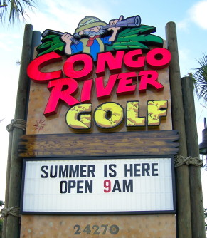
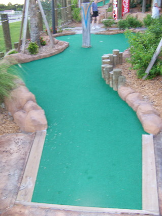

| O:
Congo River Golf 24270 S. Tamiami Trail, Bonita Springs
(west side of US-41)
(239) 948-9099, web site
 | 
| Price: $13 Number of Courses: 1 Upkeep: B Originality: B Hole-in-One Difficulty: Medium Par Difficulty: Easy Music: African
This is the fourth Congo River course that I have played, and I am never disappointed with what I find. It's a bit expensive, but there are a variety of themes, and the course is well-maintained. There is also a treasure hunt for the kids. It was really crowded when we went, so prepare to wait behind large groups. I don't usually make a big deal about the music, but I love their African rhythms. |